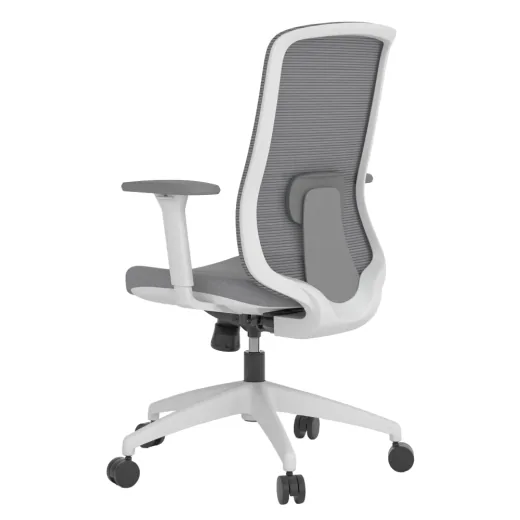
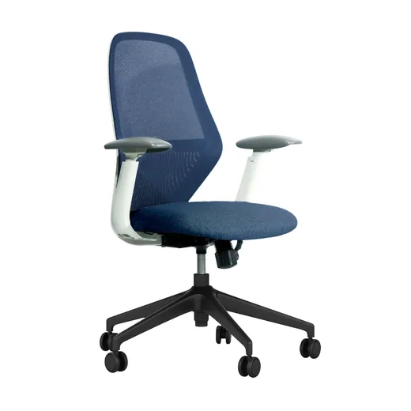
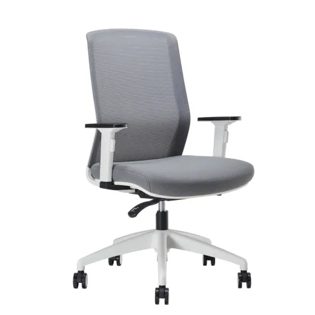
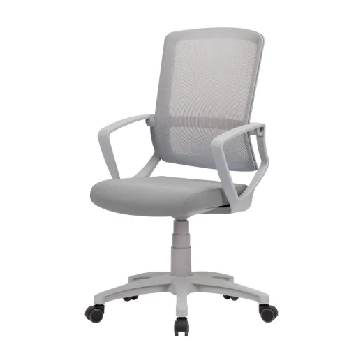
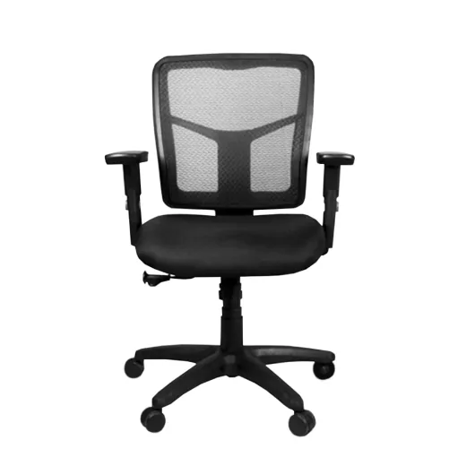

Inicio › Sillas y escritorios › Silla Operativa Sky II

Precio en cada tienda
| Tienda | Precio | Antes | Disponibilidad | |
|---|---|---|---|---|
| Arista | L 8,450 | — | Disponible | Ver en tienda › |
Precios referenciales tomados de cada tienda el 28 de noviembre de 2026. El precio válido es el que muestra la tienda al comprar.
Historial de precio
Lo seguimos desde el 16 de noviembre. Precio más bajo registrado: L 8,450 en Arista (16 de noviembre), igual que hoy. El precio no ha cambiado en ese tiempo.
Descripción
La silla Sky II cuenta con acabados en mesh y tela y con un toque de color que despierta tu creatividad.
Cuenta con: Soporte lumbar ajustable, apoyabrazos ajustables, ajuste neumático de altura y bloqueo de respaldo. Base de estrella en polipropileno con rodos 60 mm.
Otras versiones del Silla Operativa Sky II
Ver todas las versiones del Silla Operativa Sky II
Otros sillas y escritorios Operativa
 Silla Operativa NeoL 8,750En Arista
Silla Operativa NeoL 8,750En Arista Silla Operativa Neo Gris Gris Gris GrisL 8,750En Arista
Silla Operativa Neo Gris Gris Gris GrisL 8,750En Arista Silla Operativa CubicL 8,790En Arista
Silla Operativa CubicL 8,790En Arista
Silla Operativa Neo Negro Gris Azul AzulL 7,550En Arista Silla Operativa Canvas II Negro Negro NegroL 7,150En Arista
Silla Operativa Canvas II Negro Negro NegroL 7,150En Arista
Silla Operativa Canvas II Gris Gris GrisL 7,150En Arista
Silla Operativa CanvasL 7,090En Arista
Silla Operativa Structure Con apoyabrazosL 6,650En Arista